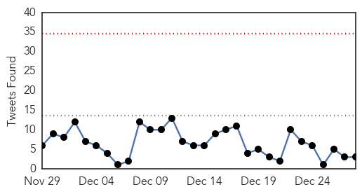

30 Day Trends
Web: 0 alerts, 0 warnings
Twitter: 0 alerts, 0 warnings
Top Articles:
- 1.000
- US Ebola czar: Fight against deadly disease reaching 'pivot point,' but more domestic cases expected
- 1.000
- Ebola response
- 0.999
- Last known Ebola case has recovered
- 0.999
- CDC worker possibly exposed to Ebola in mishap shows no signs of disease: U.S. official
- 0.998
- Malaria killing thousands more than Ebola in West Africa
- 0.998
- Ebola’s knock-on effects, lessons
- 0.998
- Malaria killing thousands more than Ebola in West Africa
- 0.998
- Ebola Is Killing West Africans Without Even Infecting Them
- 0.998
- Where have Ebola’s fear-mongers gone?
- 0.998
- Malaria killing thousands more than Ebola in West Africa
- 0.998
- Malaria killing thousands more than Ebola in West Africa
- 0.998
- Ebola’s lessons, painfully learned at great cost in dollars and human lives
- 0.998
- Malaria killing more people than Ebola
- 0.998
- Malaria killing thousands more than Ebola in West Africa
- 0.998
- Ebola czar: Americans should be "proud" of the CDC's work
- 0.998
- Ebola in West Africa has hampered fight against malaria, which is killing thousands
- 0.997
- Malaria killing more than Ebola in West Africa
- 0.995
- 2014 Texans of the Year
- 0.991
- 6 Ebola: The spectre of death
- 0.990
- San Angelo Standard Times
- 0.989
- Texans who faced, beat Ebola virus recognized by newspaper
- 0.989
- Malaria killing thousands more than Ebola in West Africa
- 0.986
- Ebola in Liberia: Analyzing Domestic And International Responses
- 0.984
- What weight loss, drinking water and pot had in common in 2014
- 0.984
- Delaware has a stake in Liberia’s future
- 0.983
- Tekmira Establishes Manufacturing and Clinical Trial Agreement to Provide TKM-Ebola-Guinea for Clinical Studies in West Africa
- 0.983
- Texans who faced, beat Ebola virus recognized by newspaper
- 0.980
- AirAsia jet: Search suspended for plane that carried 162
- 0.980
- Counterpoint: What the pope really means about markets
- 0.980
- Woman critical after Salisbury shooting
- 0.969
- 'This is the Worst Christmas I've Ever Seen': Liberia Continues to Fight Ebola
- 0.963
- Ebola expert calls for European anti-virus 'corps'
- 0.946
- EU aid shipment arrives in Ebola-hit West Africa
- 0.944
- We are always at risk, say doctors - KwaZulu-Natal
- 0.941
- Diary of British Ebola doctor Nathalie MacDemott who went back to Liberia for Christmas
- 0.921
- EU aid shipment arrives in Ebola-hit West Africa
- 0.909
- EU aid shipment arrives in Ebola-hit West Africa
- 0.908
- Somber Christmas, gatherings banned in Ebola-hit Sierra Leone
- 0.898
- Ebola survivor: 'You feel like a ghost'
- 0.888
- The Raining Season (trs) Provides Food items to Ebola Affected Orphans
- 0.880
- Ebola Survivor: 'You Feel Like ... Maybe ... A Ghost'
- 0.859
- EU aid shipment arrives in Ebola-hit West Africa — EU - European Union business news and information
- 0.846
- EU aid shipment arrives in Ebola-hit West Africa - Guinea
- 0.836
- Universal health coverage - Ebola reveals the gaps
- 0.826
- Universal health coverage - Ebola reveals the gaps
- 0.826
- Health: The Highs And Lows Of 2014
- 0.808
- Other Views:: Tidings of comfort
- 0.720
- EU aid shipment arrives in West Africa
- 0.703
- Gulf Daily News News Details Letters
- 0.669
- Accelerate Access to Universal Health Coverage adopted
Showing top 50 articles...
Top Tweets:
- 0.909
- RT: Candidates for Briton of the Year. 1. William Pooley: fought Ebola; got Ebola; went back to fight Ebola again. 2. Nigel…
- 0.604
- RT: Lessons from the Ebola outbreak in West Africa in Wash Post http://t.co/zTz0vgKgP8
- 0.553
- thnx for the retweet.......Answer pls whatcanIdotoraisefunds to show support against Ebola ?
Web/News Articles

Tweets
Article Locations